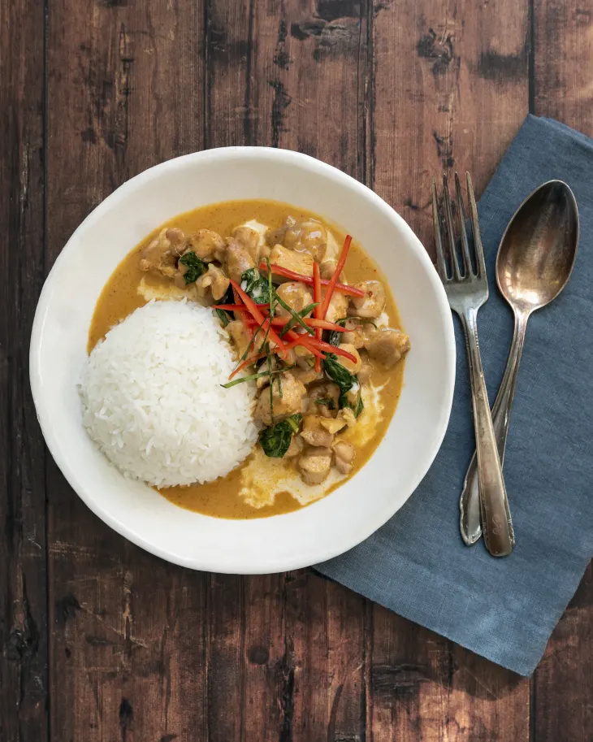

Chicken Panang Curry

| Prep Time: |
Cook Time: |
Total Time: |
15 MIN |
25 MIN |
40 MIN |
Ingredients
- 1 tbsp oil
- 2 tbsp Panang curry paste
- 1 tbsp peanut butter
- 2 lb chicken breast
- 1 small onion, sliced
- 1 green bell pepper, sliced
- 1 red bell pepper, sliced
- 2 tsp freshly grated ginger
- 4 garlic cloves, minced
- 2 140z cans coconut milk
- 1/4 cup light brown sugar
- 1 tsp cornstarch
- 1 tbsp fish sauce
- 1 tbsp lime juice
- 1 cup basil leaves, chopped
- hot cooked rice, white or jasmine
Instruictions
- Heat oil over medium-high heat in large non-stick skillet. Saute onions for 2 minutes,
then add bell peppers, garlic and ginger and saute for 2 minutes more.
- Add curry paste and peanut butter and saute for 1 minute. Add 1 ½ cans of coconut milk.
Whisk cornstarch into remaining ½ can coconut milk then add to the pan. Stir well.
- Add chicken, stirring to coat. Simmer for 10-15 minutes or just until
chicken is no longer pink and sauce begins to thicken.
- Stir in sugar, fish sauce, lime juice, and basil. Simmer for 5 minutes.
Season with salt and pepper, to taste.
- Serve over hot cooked rice.